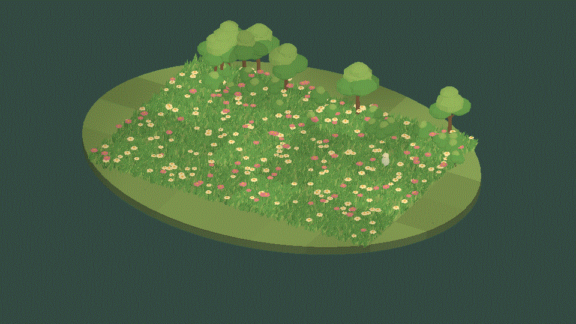
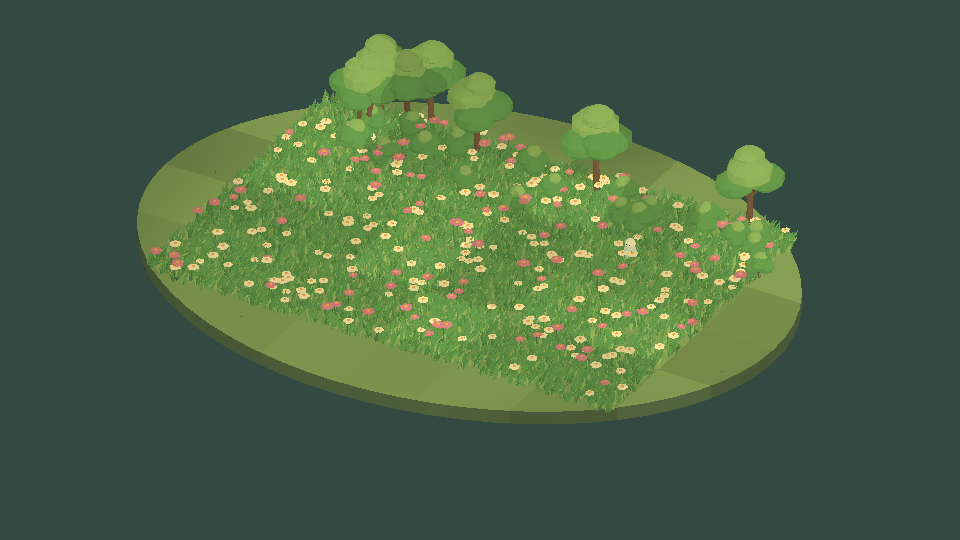
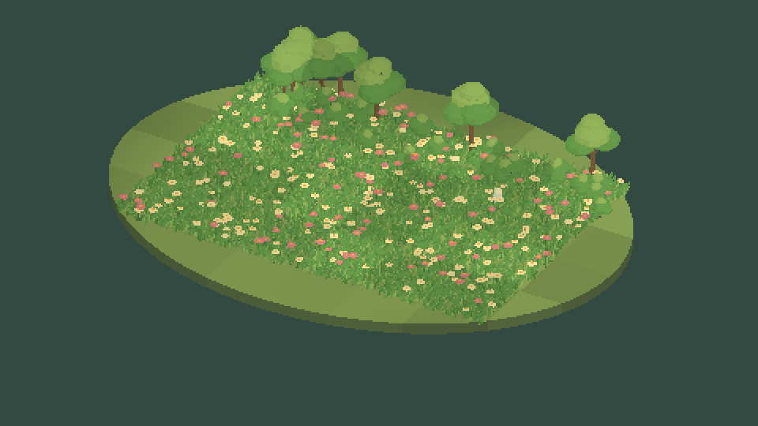

Tracefolio REPORTS & ISSUES
Tracefolio REPORTS & ISSUES식생 밀도·잔류 반응·공통 UI 개선과 원본 기능 대조
검증 대기식생 개선과 정적 검증을 마쳤습니다. 동일 기준 장면의 Camera 전후 GIF를 첨부했으며, 사용자 화면 조작 보류로 개선 후 촬영은 대기입니다.
작업 결과
잔디 형태·기본 바람·유닛 통과 후 잔류 반응·접촉 갱신 간격·식생 도구의 공통 UI 구성을 수정했습니다. 컴파일과 접촉 알고리즘 검증은 통과했으며, 개선 후 실제 외형·UI 조작·새 비교 촬영은 미검증입니다. 사용자의 최신 요청에 따라 화면·마우스·키보드 조작과 Unity 신규 실행·재시작을 중단했습니다.
Pixel Camera만으로 되는 기능인가요?
저해상도 화면·픽셀 크기·색·윤곽 처리는 Camera 기능입니다. 식생 배치·잎 형상·바람·유닛 접촉·복원은 별도 식생 기능입니다. 같은 저해상도 처리를 식생 제품에 중복 구현하지 않았습니다.
카메라 끔 → 켬 · 잔디 개선 전 기준 장면

처음 약4초는 Camera OFF, 다음 약4초는 ON입니다. 동일 씬·카메라·48개 시뮬레이션 시각에서 각각 촬영한 후 격 프레임을 사용했습니다. ScreenToGif2.43.2 설치 인코더 API로48프레임 GIF를 만들었습니다. 새 식생 개선 결과로 제시하는 이미지가 아닙니다.


수정 전후의 새 식생 비교 화면과 공통 UI 전후 캡처는 미확보입니다. 기존 이미지를 개선 후 화면으로 바꾸어 표시하지 않았습니다.
변경 내용
적용 내용
원본과 현재 구현 대조
원본 저장소의 현재 로컬 소스를 대조했습니다. 원본 Godot 데모 자체의 새 실행 측정은 하지 않았습니다.
| 원본 기능·구조 | 현재 구현·상태 | 담당 |
|---|---|---|
| Demo.tscn: SubViewport640×360 → 표시3배 | Pixel Camera 프리셋270px 높이. Built-in은 기존 화면 재사용 또는 추가 캡처이며 원본처럼 처음부터 저해상도 단일 렌더와 동일하지 않음 | Camera |
| QuadMesh를 MultiMesh로 배치, visible30000 | 직접 작성한36정점 풀 묶음과 GPU 인스턴싱. 대표 정원7000→12000묶음. 전체 GPU 비용 절감 주장이 아님 | Foliage |
| 노이즈 기반 공간 변화·바람 | 공유 노이즈와 이동 파동. 잎 폭·높이 확대, 풀 묶음당36정점 유지 | Foliage |
| 뷰 방향 정렬·UV fake perspective | 잔디 CameraFacing과 일치하는 법선 적용. 원본 UV fake perspective는 미구현 | Foliage |
| 시간 양자화·개별 phase | 기존 옵션 유지. 일반 예제는0FPS 설정으로 연속 바람,06번은 단계별 비교 유지 | Foliage |
| 캐릭터에 반응하는 변위 | 기존 접촉에 기본1.4초 잔류 감쇠 추가. 기록64개, 구역별 셰이더 접촉16개 | Foliage |
| CharacterManager 위치 수집 기본10Hz | 공유 World 접촉 수집 기본10Hz.0은 요청마다 수집. 반복 Patch 요청에서 같은 스냅샷 재사용 | Foliage |
| 혼합 toon 명암·월드 구름 | 기존 구조 유지, 기본 명암3단계·색 변화 완화 | Foliage |
성능과 표현은 구분합니다
원본 Grass.gdshader의 round(time×framerate)/framerate는 움직임을 끊는 표현입니다. 셰이더 계산 자체를 매 프레임 생략하는 캐시는 아닙니다. CharacterManager.gd는 캐릭터 위치 배열을 실제10Hz로 갱신합니다.640×360 렌더와1920×1080 표시의 픽셀 수는9배 차이지만, 이를 실제9배 성능 향상으로 해석하면 안 됩니다.
새 SoftGarden-Lightweight 프리셋은 Automatic·안정화 끔·윤곽 끔으로 기존 Built-in 코드의 추가 장면 캡처 조건을 피하도록 구성했습니다. 원본 화면은 여전히 먼저 렌더됩니다. 픽셀 출력은 유지하되 원래 지오메트리 렌더 비용을 없애는 기능은 아닙니다. 기존 안정화 프리셋도 보존했습니다. 새 프리셋 실제 실행은 미검증입니다.
공통 UI 적용
기존 ToolWindow·UITemplate.Apply·TemplateAssetInspector·공유 필드/선택창을 유지했습니다. 최소 창 크기760×560, 버튼 줄바꿈을 적용하고 Inspector를 바람/유닛 반응/빛과 구름, 형태/움직임 항목으로 묶었습니다. 새로운 문구까지92키×9언어와9개 가이드를 갱신했습니다. 원본 씬·프리팹의 식별자와 독립 제품 구조를 유지했습니다.
검증
- C#: Runtime·Editor·Samples·Camera/Pixora 어댑터·제품군6개 어셈블리 정적 컴파일 통과.
- 접촉/수학/선택창 정책: 실제 컴파일한 FoliageContactHistory·FoliageMath와 Unity 관리형 구조체로20,619개 단언 통과.600번의60Hz 요청에서10Hz 위치 수집100회, 제한 없는 수집600회. 이후 감쇠·완전 소멸·64개 상한·시간 되감기·반경0 제외 검사 통과. GPU 프레임이나 실제 씬 성능 측정이 아닙니다.
- HLSL:14변형 중10개 FXC 통과. URP 인스턴싱4개는 Unity 헤더 매크로 오류를 보존하고 실제 Unity DXC로 재검사해 통과. DXIL 서명 경고를 보존했습니다.
- 에셋: GUID·참조·메시·독립 의존성·언어/인자·문서·셰이더 재질 참조12개 정적 검사 통과.
- 검토 패키지: 식생 본체·샘플 포함·묶음을 새 소스로 생성한 뒤 내부 파일과 현재 소스 SHA256을 대조했습니다. Unity 네이티브 설치나 공식 판매 검증은 아닙니다.
- 실제 영상: 화면 보류 전에 수정 전09번 씬을 Unity6000.0.83f1·DX11 Built-in에서 같은 시간축으로Camera OFF/ON 각각48프레임 촬영했습니다. PNG를 직접 확인했습니다. 현재 개선 소스의 실행 증거는 아닙니다.
남은 사항
개선 후10개 씬과 선택 Camera 연동의 실제 Play, 넓어진 잎과 바람 품질, 유닛 잔류 복원·접촉 범위, 공통 UI의 실제9언어 전환·선택 조작, 같은 조건의 식생 개선 전후/카메라 전후 GIF 촬영이 남았습니다. 사용자가 컴퓨터를 사용하므로 화면 조작은 보류합니다. 화면 QA를 통과 처리하지 않았습니다.
기존 제품 전체 메뉴얼의 자체 로고·네이티브 패키지 설치·출시 검증도 별도 미완료입니다. 현재 원본과 같은 가벼운 텍스처 사각형 메시를 만들었다고 주장하지 않습니다.
교훈 검토: 표현 FPS·CPU 수집 빈도·저해상도 렌더 비용을 분리해 현재 소스와 실제 검사로 기록했습니다. 검증되지 않은 성능을 주장하지 않는 기존 전역 규칙과 중복되므로 전역 지침 변경 없음. 화면 조작 중단 선호도 기존 규칙에 따라 적용했습니다.
작업 시간
- 제안 시간: 60~100분
- 실제로 완료된 시간: 시작2026-11-03 22:55:42 KST. 수정 전 비교 촬영23:04:13 KST 완료. 개선 코드 최종 컴파일·관리형 검사23:14 KST 통과. 공개 보고 검증 시각은 후속 메뉴얼에 기록하며 개선 후 실제 화면 검증은 미완료입니다.
- XERJ: 사용 — Status 실패 후 Search로 XERJ 노드 재접속, TemplateAssetInspector.cs:12 검색과 현재 소스 대조. 신규 Runtime·셰이더·Godot 원본은 인덱스 범위 밖이므로 rg와 직접 파일 대조.